Timeline.
Everything in order, newest first. Each entry carries the date the work actually happened, so the whole path is visible in one place.
-
2024 to nowGoogleRobotics Systems Engineer
Robotic systems for hardware security testing on Pixel devices, working through Autoroboto.
-
OngoingHome labEvenings and weekends
Low-cost SO-101 arms on the living-room table, learned policies, and finding out what those policies have really learned when they appear to work.
-
2022 to 2024Peanut RoboticsRobotics Engineer
First job out of grad school. Owned the arm software stack on a commercially deployed mobile manipulator that cleans hotel bathrooms.
-
2020 to 2022Carnegie Mellon UniversityM.S. Mechanical Engineering, Robotics
Research at CERLAB on robotic inspection of 3D-printed parts, alongside graduate coursework across perception, SLAM, planning and optimization.
- Feb to May 2022
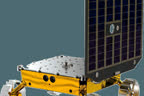
MoonRanger lunar micro-rover perception - Dec 2021
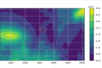
Template alignment optimization 24-785 - Nov 2021
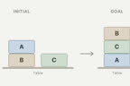
Symbolic planning 16-782 - Oct 2021
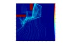
Planning for a high-DOF planar arm - Oct 2021
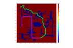
Catch me if you can - Fall 2021
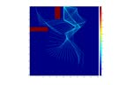
Planning mini projects hub, 3 projects - Feb to May 2021
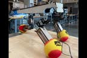
Tripawd, the three-legged robot dog - Spring 2021
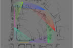
Comparative analysis of visual and lidar SLAM - Apr 2021
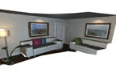
Dense SLAM with point-based fusion - Apr 2021
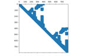
Linear and nonlinear SLAM solvers - Spring 2021
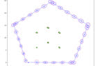
SLAM using an extended Kalman filter - Spring 2021
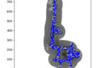
Robot localization with particle filters - Spring 2021
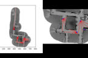
SLAM mini projects hub, 4 projects - Fall 2020
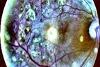
Diabetic retinopathy detection via CNN - 16-720
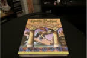
Computer vision mini projects hub, 6 projects - 2020 to 2022
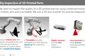
Robotic post-processing of additive-manufacturing parts - AllEvery CMU project
- Feb to May 2022
-
2016 to 2020Rose-Hulman Institute of TechnologyB.S. Mechanical Engineering · Magna Cum Laude
Undergraduate mechanical engineering: a year-long assistive-robotics capstone that represented Rose-Hulman and the USA at the E²Festa in South Korea, plus controls, machine-learning and CAD coursework.
- 2019 to 2020
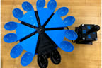
Automated eating apparatus, and the E²Festa in South Korea - Coursework
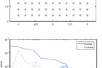
Inverse kinematics with a distal teacher - Coursework
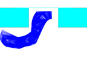
Fuzzy-logic controllers for autonomous parking - Freshman year
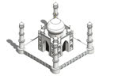
Taj Mahal CAD model and OpenGL visualization - AllEvery Rose-Hulman project
- 2019 to 2020